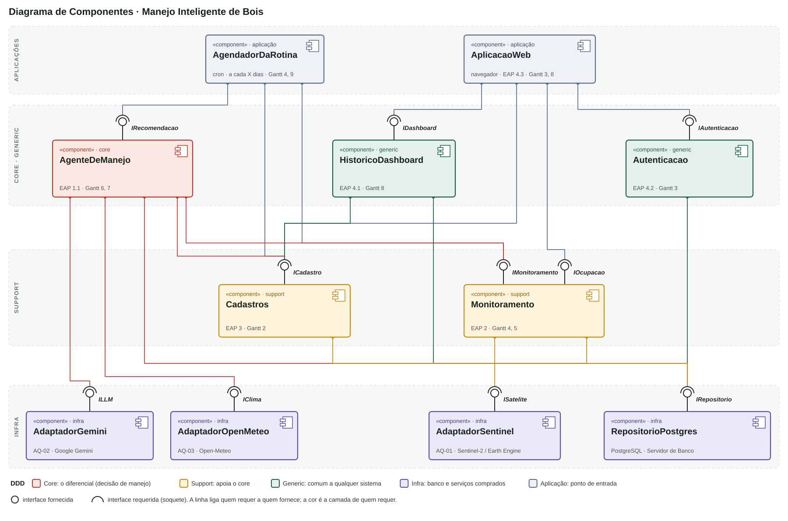
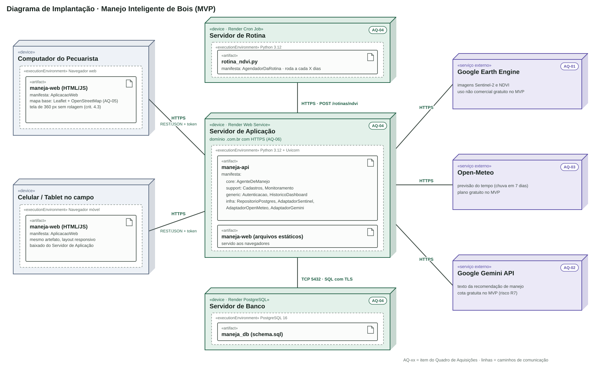
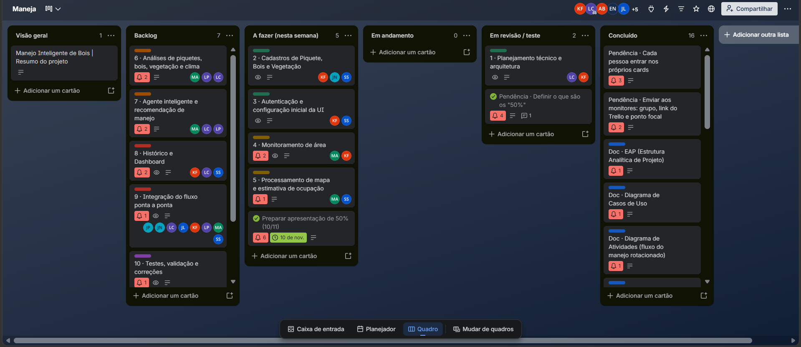

| Camada | Componentes | Pacote da EAP | Atividades do Gantt | Por que está aqui |
|---|---|---|---|---|
| Core | AgenteDeManejo | 1.1 Agente Inteligente | 6, 7 | É o diferencial: decide para onde e quando mover o gado |
| Support | Cadastros, Monitoramento | 3 Cadastros, 2 Monitoramento | 2, 4, 5 | Dão ao core os dados de piquete, rebanho e NDVI |
| Generic | Autenticacao, HistoricoDashboard | 4.2, 4.1 | 3, 8 | Qualquer sistema tem; não é o que nos diferencia |
| Infra | RepositorioPostgres, AdaptadorSentinel, AdaptadorOpenMeteo, AdaptadorGemini | 1.2, 2.2 | 2, 5, 6, 7, 9 | Isolam o banco e os serviços comprados (aquisições) |
| Aplicação | AplicacaoWeb, AgendadorDaRotina | 4.3, 2.1 | 3, 4, 8, 9 | Pontos de entrada: o pecuarista e a rotina agendada |

| Nó | Ambiente | Artefato | Componentes | Conexão |
|---|---|---|---|---|
| Computador do Pecuarista | Navegador web | maneja-web | AplicacaoWeb | HTTPS · REST/JSON + token |
| Celular / Tablet no campo | Navegador móvel | maneja-web | AplicacaoWeb | HTTPS · REST/JSON + token |
| Servidor de Aplicação (Render) | Python 3.12 + Uvicorn | maneja-api | core, support, generic e infra | recebe os clientes e a rotina |
| Servidor de Rotina (Render Cron) | Python 3.12 | rotina_ndvi.py | AgendadorDaRotina | HTTPS · POST /rotinas/ndvi |
| Servidor de Banco (Render) | PostgreSQL 16 | maneja_db | (dados do RepositorioPostgres) | TCP 5432 · SQL com TLS |
| Earth Engine · Open-Meteo · Gemini | serviços externos | — | usados pelos adaptadores | HTTPS |
render.yaml descreve esses mesmos nós como código.main.py)| Elemento UML | No código | Exemplo |
|---|---|---|
| Interface fornecida (bolinha) | classe Protocol que o componente implementa | IRecomendacao, ISatelite |
| Interface requerida (soquete) | parâmetro do construtor do componente | AgenteDeManejo(cadastro, monitoramento, clima, llm, repo) |
| Componente | classe com CAMADA, EAP, GANTT, FORNECE e REQUER | 11 classes, uma por caixa do DC |
| Conector (bolinha + soquete) | injeção de dependência em montar_sistema() | Cadastros(repo) |
| Nó e artefato | dataclasses No e Artefato | No("Servidor de Rotina", ...) |
| Caminho de comunicação | tupla em CONEXOES | ("Servidor de Aplicacao", "Servidor de Banco", "TCP 5432") |
| Coerência entre os dois diagramas | conferir_componentes() e conferir_implantacao() | falha se faltar fornecedor, nó ou conexão |
class IRecomendacao(Protocol): # bolinha def recomendar(self, piquete_id, hoje) -> Recomendacao: ... class AgenteDeManejo: # core CAMADA, EAP, GANTT = "core", "1.1", (6, 7) FORNECE = ("IRecomendacao",) REQUER = ("ICadastro", "IMonitoramento", "IClima", "ILLM", "IRepositorio") def __init__(self, cadastro: ICadastro, monitoramento: IMonitoramento, clima: IClima, llm: ILLM, repo: IRepositorio): # soquetes ...
def montar_sistema(satelite, cota_gemini): conferir_componentes() # todo REQUER tem FORNECE repo = RepositorioPostgres() cota = ControleDeCota(cota_gemini) # R7 clima = AdaptadorOpenMeteo() # AQ-03 llm = AdaptadorGemini(cota) # AQ-02 cadastros = Cadastros(repo) monit = Monitoramento(satelite, repo) agente = AgenteDeManejo(cadastros, monit, clima, llm, repo) auth = Autenticacao(repo) dashboard = HistoricoDashboard(cadastros, repo) web = AplicacaoWeb(auth, cadastros, monit, dashboard) rotina = AgendadorDaRotina(cadastros, monit, agente)
NOS = ( No("Servidor de Aplicacao", "Render Web Service", "Python 3.12 + Uvicorn", ( Artefato("maneja-api", (Autenticacao, Cadastros, Monitoramento, AgenteDeManejo, HistoricoDashboard, RepositorioPostgres, AdaptadorSentinel, AdaptadorOpenMeteo, AdaptadorGemini)),)), No("Servidor de Rotina", "Render Cron Job", "Python 3.12", (Artefato("rotina_ndvi.py", (AgendadorDaRotina,)),)), ...) CONEXOES = ( ("Servidor de Rotina", "Servidor de Aplicacao", "HTTPS - POST /rotinas/ndvi"), ...) conferir_implantacao() # sem nó ou sem conexão = erro
services: - type: web # Servidor de Aplicação name: maneja-api plan: free startCommand: uvicorn maneja.api:app envVars: - key: DATABASE_URL # TCP 5432 fromDatabase: { name: maneja-db } - key: GEMINI_API_KEY # AQ-02 - type: cron # Servidor de Rotina name: maneja-rotina-ndvi schedule: "0 9 */5 * *" startCommand: python rotina_ndvi.py databases: # Servidor de Banco - name: maneja-db plan: free
=== 1. Conferencia do DC e do DI ===
Todas as interfaces requeridas tem fornecedor e todos os nos que conversam estao conectados.
=== 6. Movimentacao de animais ===
Norte recebeu 17 animais; 3 bois foram para o Sul.
Barrado (criterio 2.2.1, lotacao nunca negativa): Quantidade invalida: bois=-5
=== 7. Rotina agendada de hoje (Servidor de Rotina -> Servidor de Aplicacao) ===
[R3] Piquete Norte: IA respondeu 'MANTER o lote', mas a regra decidiu RETIRAR. Texto da IA descartado.
[R6] Piquete Sul: imagem com 85% de nuvem descartada; vale a ultima leitura limpa (15/11).
[R7] Alerta: 3/3 chamadas da cota gratuita usadas.
Piquete Leste: satelite sem imagem para o periodo.
Piquete 1: RETIRAR via regra
Piquete 2: MANTER via gemini
Piquete 3: SEM_DADOS via regra
=== 8. Dashboard ===
Piquete Norte: lotacao 14 {'bois': 7, 'vacas': 5, 'bezerros': 2}
NDVI 0.42 em 19/11 | RETIRAR: NDVI 0.42, 14.0 cab/ha, chuva 7d 12 mm. [regra]
Piquete Sul: lotacao 3 {'bois': 3, 'vacas': 0, 'bezerros': 0}
NDVI 0.74 em 15/11 | MANTER o lote. Pastagem em boas condicoes, monitorar a lotacao. [gemini]
| Risco (registro) | Onde no diagrama | Resposta no código |
|---|---|---|
| R3 · Agente de IA recomendar manejo errado | AgenteDeManejo (core) | A regra decide a ação e o Gemini só escreve o texto. Texto que contradiz a regra é descartado |
| R6 · Nuvens nas imagens de satélite | Monitoramento + AdaptadorSentinel | Imagem com mais de 30% de nuvem é descartada; vale a última leitura limpa por até 7 dias (critério 1.1.1) |
| R7 · Fim da cota dos planos gratuitos | AdaptadorGemini (ControleDeCota) | Alerta acima de 80% da cota. Se acabar, usa o texto padrão e a rotina não para |
| R2 · Atraso na integração (atividade 9) | montagem e implantação | conferir_componentes() e conferir_implantacao() acusam peça ou conexão faltando antes de integrar |
| Qualidade 2.2.1 · lotação nunca negativa | Monitoramento (IOcupacao) | Quantidade negativa, não inteira ou de categoria desconhecida é rejeitada antes de alterar o piquete |
| ID | Item | Make-or-buy | No Diagrama de Componentes | No Diagrama de Implantação |
|---|---|---|---|---|
| AQ-01 | Imagens de satélite / NDVI | Comprar / usar gratuito | AdaptadorSentinel (ISatelite) | Google Earth Engine |
| AQ-02 | Modelo de linguagem (LLM) | Comprar: modelo próprio inviável | AdaptadorGemini (ILLM) | Google Gemini API |
| AQ-03 | API de previsão do tempo | Comprar / usar gratuito | AdaptadorOpenMeteo (IClima) | Open-Meteo |
| AQ-04 | Infraestrutura em nuvem | Comprar: evita servidor físico | — | Servidores de Aplicação, Rotina e Banco |
| AQ-05 | Mapa base dos piquetes | Usar gratuito | AplicacaoWeb | artefato maneja-web (Leaflet + OSM) |
| AQ-06 | Domínio e certificado HTTPS | Comprar | — | conexões HTTPS do Servidor de Aplicação |

| Cartão (atividade do Gantt) | Componentes |
|---|---|
| 2 · Cadastros | Cadastros |
| 3 · Autenticação e UI | Autenticacao, AplicacaoWeb |
| 4 · Monitoramento de área | Monitoramento, AgendadorDaRotina |
| 5 · Mapa e ocupação | Monitoramento, AdaptadorSentinel |
| 6 · Análises | AgenteDeManejo, AdaptadorOpenMeteo |
| 7 · Agente inteligente | AgenteDeManejo, AdaptadorGemini |
| 8 · Histórico e dashboard | HistoricoDashboard, AplicacaoWeb |
| 9 · Integração | montagem, implantação, render.yaml |
GANTT de cada componente guarda o número do cartão. Assim o andamento no Trello mostra quais peças dos diagramas já estão prontas. Código e diagramas ficam versionados no GitHub.